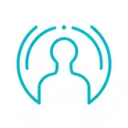
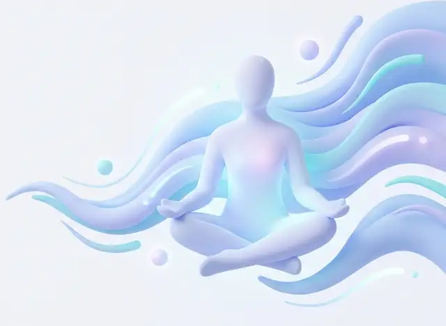
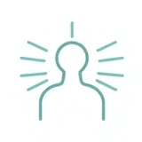
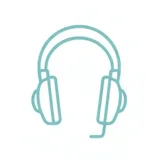

Швидка самодопомога
Перша практика запускається за 1–2 кліки: без реєстрації, оплати та довгих опитувань.
Безкоштовно · українською · без реєстрації
Обери свій стан — і за 1–2 кліки отримай дихальну вправу, техніку заземлення або аудіо-релакс. Можна зупинитися будь-коли.
Твій темп. Твій вибір. Без обов'язкових відповідей.

Інструмент для моментів, коли сил на довгі анкети немає — лише кілька секунд до першої практики.

Перша практика запускається за 1–2 кліки: без реєстрації, оплати та довгих опитувань.

Прості техніки, які м'яко знижують напругу. Ти сам обираєш темп і можеш зупинитися будь-коли.

Спокійні аудіо- та відеопрактики українською для відновлення після стресу та перед сном.
Короткі практики саморегуляції — від 1 до 2 хвилин
Відчуй фізичну опору під стопами або спиною. Знайди поглядом три предмети синього кольору поруч.
Почати вправу «Знайди опору навколо»Подивись навколо. Назви вголос колір і форму одного конкретного предмета перед тобою.
Почати вправу «Поміть предмети навколо»Сядь зручно. Відпусти напруження в плечах, щелепі та долонях, якщо це комфортно зараз.
Почати вправу «Коротка пауза»Влаштуйся зручно й назви подумки три найтихіші звуки в кімнаті. Не змушуй себе спати негайно.
Почати вправу «Тиха пауза перед сном»Поміть, що прямо зараз могло б трохи підтримати тебе: склянка теплої води або теплий плед.
Почати вправу «Маленька турбота про себе»Вдих через ніс на 4 секунди, м'яка пауза на 7, плавний видих ротом на 8. Якщо затримка некомфортна — просто дихай повільно.
Почати вправу «Вправа 4-7-8»«Спокій розуму» — студентський проєкт української смарт-платформи першої психологічної самодопомоги. Ми створюємо простий інструмент для людей, які живуть в умовах війни та постійного стресу.
Наш принцип — zero friction: жодних реєстрацій чи платіжних стін, мінімум тексту в момент стресу та м'який шлях до професійної допомоги, коли вона потрібна.
Можна не визначати стан точно, а обрати те, що ближче зараз.
Короткі та чіткі кроки без необхідності реєструватися чи платити.
Ти контролюєш процес. Можна зупинити практику будь-якої миті.
Лише за бажанням. Відповідь необов'язкова та залишається приватною.
П'ятихвилинна практика глибокого дихання українською. Увімкни відео, сядь зручно й просто повторюй за голосом.
Обери стан, і ми запропонуємо коротку практику. Без реєстрації та без обов'язкових відповідей — просто зроби перший вдих.
Адресам. Львів, вул. Степана Бандери, 12
Години роботиПн–Пт, 10:00–18:00
Адреса умовна — використана в навчальному проєкті для демонстрації інтеграції карти.